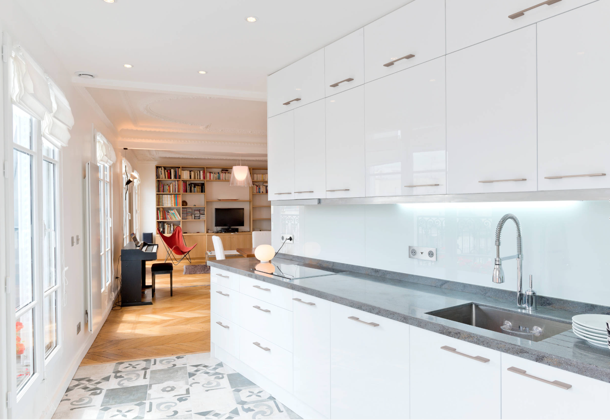
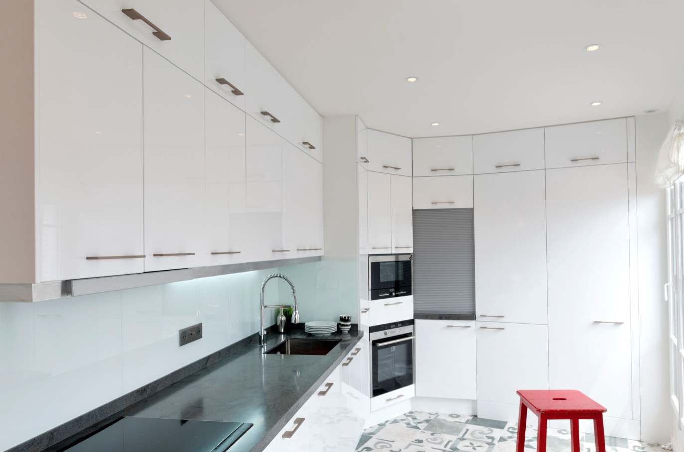
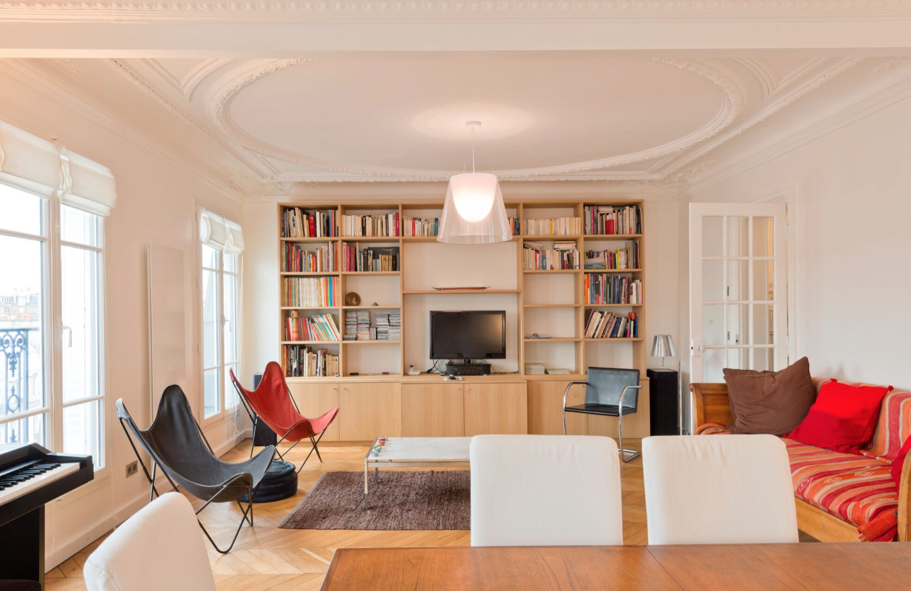
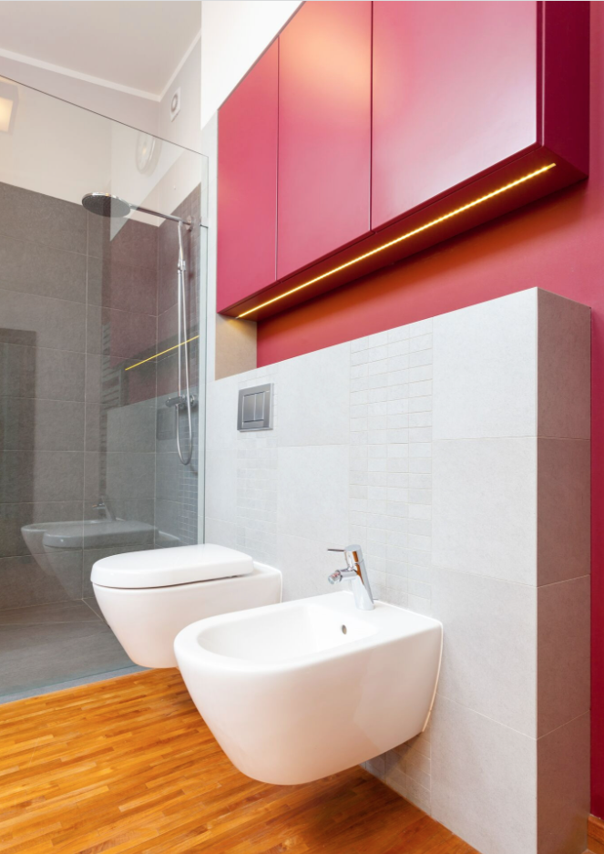

Apartamento Red
El proyecto "Apartamento Red" fue una gran oportunidad para demostrar mi experiencia en diseño de interiores. El cliente, una pareja joven, buscaba renovar su apartamento y crear un espacio acogedor y moderno que reflejara su estilo de vida.
El proceso comenzó con una reunión en la que se discutieron las necesidades y deseos del cliente, así como el presupuesto y los plazos disponibles para la reforma. A partir de esta reunión, se elaboró un diseño en 3D del proyecto, que fue aprobado por el cliente antes de comenzar la construcción.
Una de las principales prioridades del proyecto fue renovar la cocina. El objetivo era crear un espacio funcional y moderno, con una gran isla central que se convirtiera en el corazón de la cocina. Además, se instalaron electrodomésticos de alta gama y se eligieron materiales de calidad, como granito y acero inoxidable, para darle un toque sofisticado al espacio.
Otro de los aspectos clave del proyecto fue la renovación del baño. El objetivo era crear un espacio relajante y lujoso, con un gran plato de ducha y acabados de mármol. Además, se instalaron accesorios de alta calidad, como grifos y iluminación, para darle un toque de elegancia al espacio.
Además de las reformas en la cocina, baño y salón, también realizamos algunos cambios en el resto del apartamento. Uno de los objetivos era maximizar el espacio disponible, por lo que se eliminaron algunas paredes y se crearon zonas abiertas para darle una sensación de amplitud al apartamento.
El salón también fue objeto de una reforma en profundidad, con el objetivo de crear un espacio acogedor y moderno. Se eligió un sofá cómodo y una mesa de centro de diseño, y se utilizaron tonos cálidos y suaves para darle un toque de tranquilidad al espacio.
Una vez finalizadas las obras, el resultado final fue impresionante. La cocina se había convertido en un espacio moderno y funcional, perfecto para cocinar y entretener a los amigos. El baño se había convertido en un oasis de relajación y lujo, y el salón se había transformado en un espacio acogedor y moderno, perfecto para relajarse y disfrutar de la vida en familia.
Además de las reformas en la cocina, baño y salón, también realizamos algunos cambios en el resto del apartamento. Uno de los objetivos era maximizar el espacio disponible, por lo que se eliminaron algunas paredes y se crearon zonas abiertas para darle una sensación de amplitud al apartamento.
También se prestó mucha atención al diseño de iluminación, ya que queríamos crear un ambiente cálido y acogedor. Se instalaron luces LED en el techo y en las paredes, y se utilizaron lámparas de diseño para añadir un toque de elegancia al espacio.
Otro aspecto importante del proyecto fue la selección de la decoración. Queríamos crear un espacio que reflejara la personalidad del cliente y su estilo de vida, por lo que se eligieron piezas de arte y objetos decorativos que reflejaran su personalidad.
Además de las reformas y el diseño, otro aspecto importante del proyecto "Apartamento Red" fue la planificación y gestión de la obra. Teníamos un plazo establecido para completar las obras y queríamos asegurarnos de cumplirlo. Me encargué de supervisar y coordinar a todos los trabajadores y proveedores involucrados en el proyecto para asegurarme de que el trabajo se realizara de manera eficiente y eficaz.
También me aseguré de mantener una comunicación constante con el cliente, para asegurarme de que estuviera informado en todo momento del progreso de las obras y para recibir su retroalimentación. Esto permitió al cliente sentirse involucrado en el proyecto y me permitió asegurarme de que el resultado final cumpliera con sus expectativas.
En resumen, el proyecto "Apartamento Red" fue un gran desafío, pero también un gran éxito gracias a mi experiencia y dedicación en el diseño de interiores. Me aseguré de que todos los aspectos del proyecto, desde la planificación hasta el diseño y la construcción, se llevaran a cabo de manera eficiente y eficaz para garantizar un resultado final de alta calidad que cumpliera con las expectativas del cliente. Estoy muy orgullosa de haber contribuido a crear un hogar cálido y acogedor para esta pareja joven y estoy deseando trabajar en proyectos similares en el futuro..